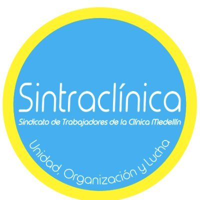
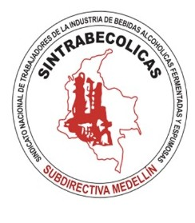
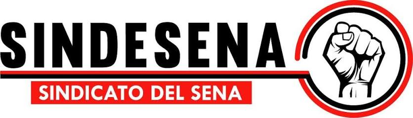
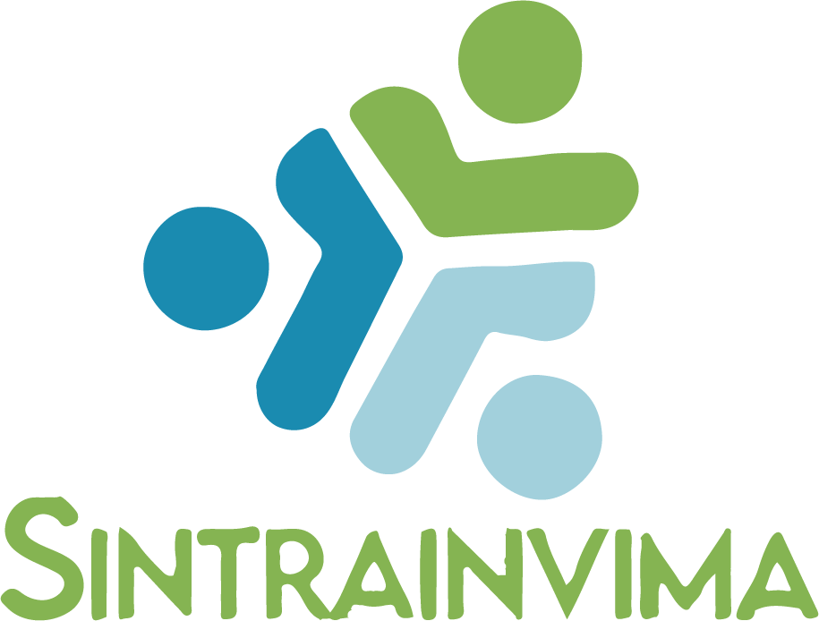
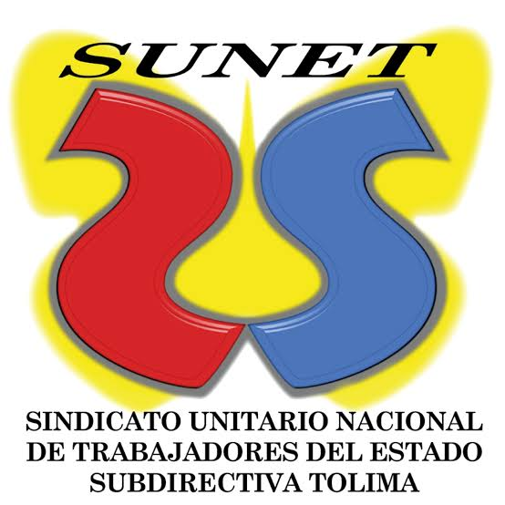

Es una organización de personas trabajadoras que se unen para defender sus derechos, mejorar sus condiciones laborales y participar colectivamente en las decisiones que afectan su vida en el trabajo.
Lo básico
Lo que toda persona trabajadora debería saber.
Porque juntas y juntos se negocia mejor. La afiliación permite recibir orientación, participar en decisiones colectivas, elegir representantes, construir pliegos y exigir condiciones más justas frente al empleador.
Puede negociar salario, beneficios, permisos, jornadas, descansos, salud y seguridad, igualdad, garantías sindicales, procedimientos disciplinarios y mecanismos para resolver conflictos.
La afiliación sindical es una decisión libre. Antes de comunicar cualquier situación particular, es recomendable recibir orientación del sindicato o de una asesoría jurídica de confianza.
Organizaciones sindicales
Sindicatos y procesos que acompañamos.

SINTRACLÍNICA Medellín
SINTRABECÓLICAS
SINDESENA
SINTRAINVIMA
SUNET Subdirectiva MedellínEncuentra tu sindicato
Busca una organización según tu sector o lugar de trabajo.
Este directorio es orientativo y editable. Puedes reemplazar o completar enlaces de afiliación y datos de contacto.